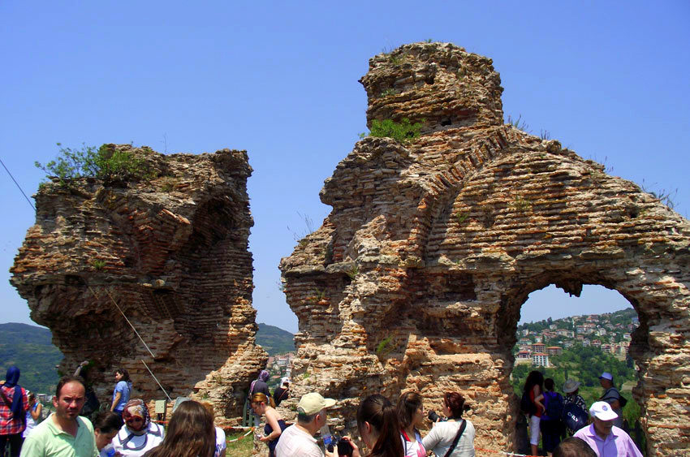

Ereğli Kalesi
Askeri yasak bölge içindedir. Tepenin sırtındaki bu alan kuzeye doğru hafifçe yükselerek deniz seviyesinden 150-160 metre yüksekliğe ulaşmıştır. Denize dik yamaçlara sahip bu tepede antik çağda M.Ö. 4. yüzyılda Klearchos tarafından Herakleia Pontike’nin ilk akropolisi kurulmuştur. Kale içerisinde bir sarnıç bulunmaktadır. Kale duvarlarının içi su altında sertleşen kırmızı renkli hidrolik bir harçla kaplıdır. Alanda ayrıca yüksek oturma grupları, kuleler ve sur duvarları yer almaktadır.